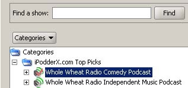
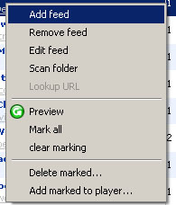
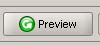
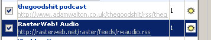
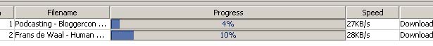

jPodder let's you download and transfer media files from web sites to your media player like iTunes. The media file source is a so-called RSS 2.0 feed. Inside the RSS feed the media files are referred to as enclosures.
The concept of retrieving media files from RSS feeds and storing these inside your media player is called podcasting. This term has been derived from casting audio information to an MP3 player like the iPod. This guide explains how to use jPodder to receive enclosure media files.
jPodder is the leading podcast receiver, it is developed in an open-source community, so many features are suggested by end-users like yourself.
The Multi-tab User Interface
The jPodder user interface consists of several tabs, which closely follows the order in which you would want to listen to podcasts :
The natural order of activities will be:
1) To browse or search for a podcasting feed and add this to the personal feed.
2) To review and subscribe to the selected feeds and initiate downloads.
3) To manage the ongoing downloads.
4) To listen to the newly transferred podcasts with your favorite media player.
5) To manage (clean-up) the downloaded podcasts and free-up disc space.
Viewing & marking enclosures
Enclosures (files) inside the RSS feed can be viewed and marked. Marking is context sensitive. e.g. A marked enclosure means it is eligible for download once the scheduler kicks in. It can also mean that you wish to delete the local file of the enclosure when selecting the delete action. Another way marking is used, is with the "transfer to the player action".
Automatic or scheduled downloading
jPodder contains a scheduler which you can configure to scan your subscribed feeds and download podcasts at scheduled intervals. Another way to download is manually by simply selecting which enclosures/podcasts you want to download.
Transfer to the media player
jPodder can optionally transfer the downloaded enclosure to the selected media player. This is done automatically (After a download completes) or manually depending on your preference.
A sequence of configuration steps should be followed in order to get the best jPodder experience. Follow the Settings tab in jPodder to customize personal settings.
On the left side you select the configuration category first. The following categories are defined:
Note: Make sure the settings below are recorded by clicking the Save button.
In this category you can select the media player in which the downloaded file will be stored. You can choose from iTunes, Windows Media Player or no player at all. The media player will be launched automatically when inspecting enclosures and files or transferring files to the player.
In this category you can set various download options.
Download Folder
Set the download folder. This is the base folder for media-files.
In the Settings tab, fill in the podcast folder or click on the "Browse" button to browse to a preferred folder.
jPodder will create sub-folders in this directory for each feed. The subfolder name is by default the description belonging to the first occurrence of the <title> tag in an RSS 2.0 source.
Note: jPodder will automatically remove characters from the title, which the windows file system does not accept. These are: '\' '*' ':' ';' '?' '"' '<' '>' '|' '/'
Cache Settings
Here you can set the cache file location. This option is for advanced use only. You can also set if jPodder should create a cache entry for files which are in the feed folder or in the media player but missing in the cache. This option comes in handy in case your cache file is missing.
Latest Only
A popular usage of jPodder is to download the latest enclosure only. When selecting this option the first occurrence of a an enclosure in an RSS feed will be marked in a preview or download task.
Sound Feedback
Mark the checkbox "Play a sound after a successful download" to hear a sound when a download is completed.
BitTorrent
Select if the BitTorrent module should be loaded immediately or only when an attempt is made to download a .torrent file. Not loading the BitTorrent module is saving system resources until a .torrent is encountered.
In this category you can mark the "Use proxy server" checkbox, if you are using a proxy-server. When checked you can provide the server name like my-proxy.com and the proxy server port. This function is often required behind a corporate firewall/proxy server.
In this category you can mark the "Automagic on/off" checkbox if you want automatic scheduling. Here you can use the slider to set the interval time in minutes.

It's now possible to import feeds and setting from other Podcast clients. Currently you can import from iPodder lemon.
Select the location of the iPodder lemon folder and press the Import button. jPodder will scan the files ipodder.cfg, favorites.txt and scheduler.txt. The result will be presented to you and you can decide to import them.
You can use the feed-directory to search for feeds or browse through the entire directory.
The directory is queried online from www.ipodderx.com, so it's always updated with the latest feeds.
Simply fill in a search term in the text box and click the Find button.

You can add a feed to your personal feed list, by selecting it in the directory, and then clicking on the "Add to personal feeds:" button.
Feeds which are already in you personal feeds can not be added again. You can recognize a feed which is already in your personal feeds with a check mark in the podcast icon.
The iPodderX directory is automatically notified, when you add a feed to you personal feeds. This is used to track popular feeds and offer these under a separate category. (Top Picks).
Working with your feeds is explained in this section.
The personal feeds panel display various elements.
The table on the left shows all your personal feeds. After selecting a feed in the table, The table on the right will show the available enclosures & files for this feed.
You can add, edit and remove feeds manually and perform other actions with the feed popup-menu. The popup menu is accessible by right-clicking on a selected feed. The popup menu provides access to additional features, which are explained further in this section
Before you can listen to podcasts, you need to tell jPodder, which feeds should be scanned and how many enclosures should be downloaded. The scanning sequence will, for every feed, download the maximum selected number of marked enclosures. (The default is 1 enclosure). Enclosures from each respective feed are downloaded in the order of appearance in the feed-table. (Which is the order of appearance in the RSS feed).
The scanning sequence is initiated at the specified scheduled intervals as specified in the Settings panel or can be started manually by clicking on the "Download Now!" button.
Previewing a feed
The enclosures of a feed can be viewed by pressing the preview/refresh button or selecting the preview/refresh action in the popup-menu.

As the network is accessed, it takes some time before the enclosure information is retrieved. This is illustrated by displaying the wait cursor.
Downloading from feeds
You can initiate a manual scanning sequence by pressing the "download now!" button. jPodder will fetch the RSS feeds you have subscribed to, mark new enclosures (This can be all new or only limited to the max. downloads field) and start downloading from the subscribed feeds.
Note: It's also possible to download a single enclosure from the feed. See the pop-up menu for the enclosure/file table.
The feed-table contains all your personal feeds. The following section describes various actions which can be performed on personal feeds.
A feed can be added manually by selecting the "Add feed" action in the popup menu. A dialog will be displayed where you can enter a fully-qualified URL. This is a web-address which contains http:// part. The feed title will be retrieved automatically from the RSS Title.
Adding feeds from OPML (Removed from 0.7 onwards).
Feeds can also be added, by importing from an OPML file on the web. Currently jPodder has been tested with the OPML directory on ipodder.org. To add feeds from OPML file go to the Settings tab, fill in an OPML URL, Save the settings and click on the "Get" button.
The OPML file will be scanned and valid feeds will be added to your feed-table. This action can take some time, there for you are informed of the progress through a percentage completed progress bar and which feeds have been found.
warning! When selecting OPML import all existing feeds will be replaced by the newly imported feeds.
Editing a feed
A feed URL can be edited by selecting the feed in the feed table, right-clicking on the feed to bring up the popup menu and then selecting the "Edit feed" action. This will display a dialog in which the URL of the feed can be modified.
Removing a feed
You can remove a feed from the feed-table by selecting it first in the feed-table, then right-clicking on the feed to bring up the popup menu and then selecting the "Remove feed" action.
A confirmation dialog will be presented whereby you can, besides removing the feed from your personal list, select two additional options:
Warning! All removed files will be lost permanently. Use this action carefully.
Scanning the podcast folder
The podcast folder can be scanned to detect folders which correspond to a podcast. This is useful in case you downloaded from a feed previously, but deleted the feed from your personal feed list. You will be presented the total number of feeds (folders) found in the podcast folder and can decide to add them.
Note: See section 1.2 on how to set the podcast folder.
Note: The URL of the feed is unknown at this stage. See the look-up URL action, for retrieving the URL from the directory.
Looking up the feed URL
The URL of a feed might be missing as a result of invoking the "Scanning the podcast folder" action. By selecting this action, the feed title will be queried in the directory. You can then select to update the feed with an URL found as a result of the query. Only the first result will be presented if multiple matches are found.
Marking and clearing marking enclosures & files.
You can mark & clear mark of all enclosures & files by selecting the respective action
Changing the feed order
The order in which feeds are scanned can be changed by selecting a feed in the table and clicking on the up or down button to the left of the feed-table.
Subscribing to a feed
The feed-table contains your personal feeds. If you want to download enclosures from a feed, you need to mark the checkbox in the first column named subscribe.
This can be done by simply clicking on the checkbox in the first column.

In the example above, The "RasterWeb! Audio" is subscribed for download.
A feed to which you have subscribed will take part in the feed scanning process at a scheduled interval or when manually initiated by pressing the "Download Now!" button.
Downloads limit per feed
In the feed-table, a column shows the maximum number of enclosures from a specific feed, which will be downloaded during a feed scanning sequence. This number can be increased to receive more enclosures from a specific feed.
Note: The maximum number of simultaneous downloads (From any feed) is limited to 3. Other initiated downloads will be queued.
Feed quality
jPodder keeps track of the quality of feed URL. if connection to the feed is without problems, then this will be reported as a sunshine icon in the last feed-table column. If a connection is not possible an umbrella will be shown.
jPodder currently does not register quality for slow performing feeds.
The enclosure-table, shows the enclosures & files inside respectively the feed and the local file folder associated with the feed. The table is shown by selecting a feed in the feed-table.
As you can see below, the enclosures have a different background color than the files. The background for Enclosures in blue and white. The background for files is orange and white.
Note: If a local file is still in the RSS feed as an enclosure (This means it's been downloaded before), it is only displayed as an enclosure and not as a file. In any case the file is only displayed ones.

The files in the local feed folder are automatically shown. For displaying the enclosures from the RSS feed you should click the preview button. jPodder remembers the last-modified date of the RSS feed to avoid un-necessary access to the podcast provider.
The enclosures are listed in order of appearance in the RSS feed. jPodder does not sort enclosures based on other attributes. (Like PubDate).
The following information is shown in the enclosure table:
Context sensitive marking
Marking an enclosure/file is context-sensitive. What will happen with the enclosure/file depends on which action is invoked. The table below shows the actions and the respective behavior on the marked enclosure/local file.
| Action | Effect on Enclosure | Effect on File |
| Download Now! | Will download the marked enclosure if the enclosure is within the download limit as specified by the feeds max-downloads. (Highlighted in purple). | Not Applicable |
| Delete Marked | Will delete the marked enclosure from the player and disc, if a local file exists. | Will delete the marked file from the player and disc if a local file exists. |
| Update Player | Will add the marked enclosure to the default media player, if a local file exists and if not in the the player yet. | Will add the marked file to the default media player, if a local file exists and if not in the the player yet. |
If this check-box is marked, the enclosure will be eligible for download only if the maximum number of downloads per feed has not been reached. Enclosures which are eligible for download are highlighted in a different color
- Purple highlighting: The enclosure is marked and eligible for download. Clicking Download Now! will download this enclosure.
- Yellow highlighting: The enclosure file size on the local disc does not correspond to the file size in the RSS feed. You can resume download for these enclosures by marking them (If they aren't already).
The enclosure/file table provides quick access to some actions through a popup menu which can be shown by right-clicking on an enclosure or file in the table.
The diagram below shows the popup menu.

Play a file
Play an enclosure directly in the selected player. (Only tested on iTunes).
Add a file to the player
If for some reason the enclosure or file is not in the player (See column "In Player?" further on), you can manually add the enclosure/file.
Download an enclosure
As an alternative to downloading in a scanning sequence, you can download the selected file directly here.
MP3 Info
Displays MP3 info of a selected enclosure/file.
Delete a file
Delete the local file directly.
Next the enclosure/file table columns are described.
File Name
This is the media file name as stored in the RSS enclosure or the local file name.
Size (web)
This is the size of the media file has reported by HTTP server. This column is not applicable for local size.
Size (disc)This is the size of the media file on the hard disc, if the file is found there.
On Disc?A check mark to indicate if the file is already stored on the hard disc.
In Cache?A check mark to indicate if the file has been downloaded before and stored in the cache.
In Player?A check mark to indicate if the file is stored in the player (iTunes is only supported for now).
Last ModifiedThe last modified date of the media file as (if) reported by the HTTP server or the modified date of the local file.
The status bar displays instant information about feeds, enclosures, scheduler etc...
The following items are displayed:
Subscription information
In the form of S=2(10) feeds M=34(40). This means, 2 out of 10 feeds have been subscribed to and within these 2 feeds, 34 out of 40 enclosures are marked. This tells you how many files remain to be downloaded.
Note: Marked enclosures are not necessarily downloaded, this depends on the max downloads value. To know how many enclosures will actually be download, move the mouse over the scheduler information field showing the count down towards the next-download, a tool-tip will appear telling you how many enclosures will be downloaded in the next run.
Scheduler information
You can control the scheduler (on/off) and see when the next scheduling will occur.
Feed information
The folder of the selected feed is displayed and the total files in the folder. It also shows the total size of the files.
Player information
Displays the selected player or if no player is selected.
The download panel, displays two tables with the current download items and control buttons to abort downloads and clean the table.
The download-table displays download items and the state in which they currently are. A download item can have the following states:
Queued
The download item is queued, and waiting for the download process to proceed with this item. The queued status occurs when the download process has reached is maximum number of simultaneous downloads.
Downloading
The download item is currently being retrieved from the server. A progress bar displays the progress in percentage. A speed column displays the transfer speed expressed in Kilo Bytes per second.

Completed
A download item has been retrieved completely and remains to be deleted manually. This is done by clicking on the "Delete Completed" button.
Error
An error has occurred while retrieving the download item. The cause of the error is displayed.
Aborting a download
An ongoing or queued download item can be aborted by selecting the item in the table and then clicking on the "Abort:item" button.
The BitTorrent download table shows the progress of a BitTorrent download. The BitTorrent download is initiated automatically after the completion of a file download with the ".torrent extension.
The BitTorrent module in jPodder will automatically seed (Offer for upload) the downloaded file. This is an intrinsic requirement of bitTorrent.
BitTorrent Azureus Library
JPodder makes use of the Azureus BitTorrent library. Azureus stores some of it's information in the user folder under ..\Azureus.
The information stored is:
It is currently not possible to configure Azureus from with jPodder. An option to control the Azureus settings is to download Azureus and make configuration changes in the Azureus application. jPodder will use the same settings.
Downloaded files will automatically be transferred to your media player. Currently apple iTunes & Windows media player are supported.
You can get iTunes from www.apple.com
You can get Windows Media Player from www.microsoft.com
A new playlist will be created for each list in the player. The playlist name is according to the feed folder name on your file system.
Once you connect your portable media player to either iTunes or WMP, you will be able to synchronize your new podcasts with your portable player. Please refer to the respective player manual for this.
All important events, including errors are reported in the logging panel. This give you the opportunity to understand what is happening in case jPodder is not responsive
jPodder is fully relying on the connection to the Internet and to the media players on your system there for communication to external entities can cause problems like the availability of the application or feed on the Internet.
The logging panel inform you of these errors and events. You can copy & paste from the logging panel and include this in a report, when a bug occurs.
The logging information can be cleared, by clicking the Clear Log button.
If you can not find what you are looking for in this guide. Please feel free to post me on:
jPodder-user@lists.sourceforge.net
Adam Curry - Ganja smoking podcaster and visionary
BiTorrent - P2P file sharing technology.
Enclosure - A special tag in an RSS feed containing a media file.
Feed - An RSS 2.0 compliant URL.
Podcasting - The action of retrieving media files from an RSS feed and storing this in a media player, which is synchronized to a portable media player.
OPML - Outline Markup Language
RSS - Stands for Really Simple Syndication. It's a format originally designed for web-logging or blogging.
URL - Uniform Resource Locator (web-link).